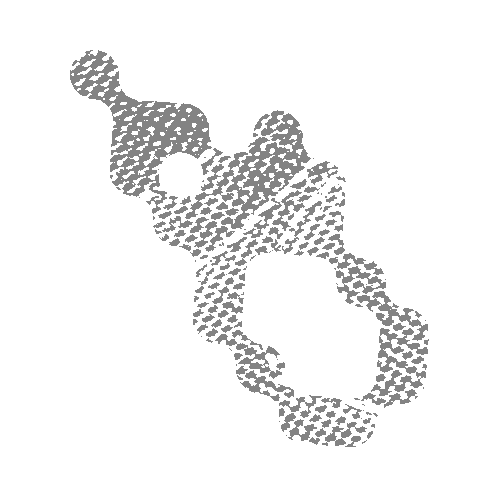

PROJECT: Upcycling
To create an item with more value
than its original form.
VISION:
In this project, Katsuhiro and myself had a goal to create two garments out an old sleeping bag while maximizing the use of the textile and minimizing waste. In the end we created two Nylon down vests which focused on different forms and implementing function.